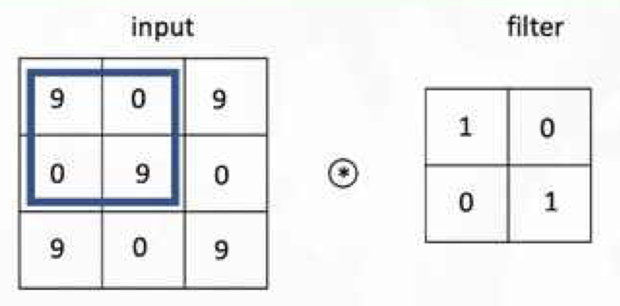
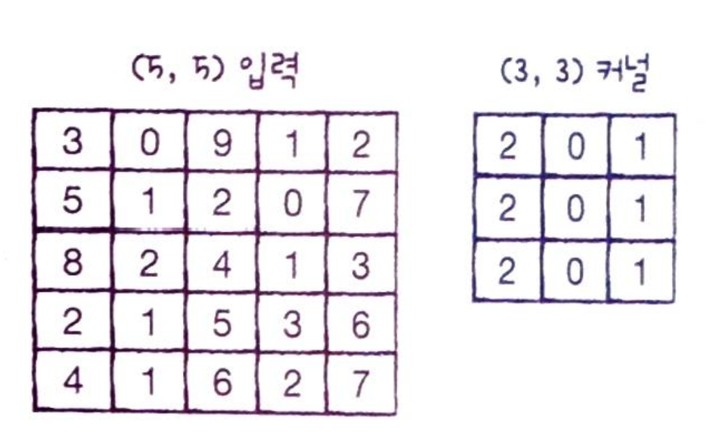
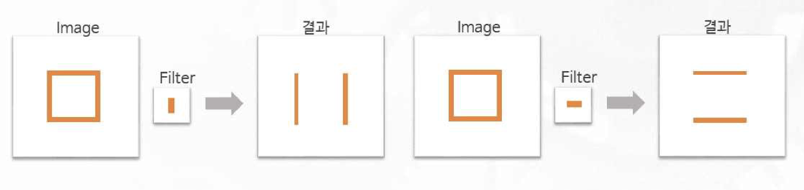
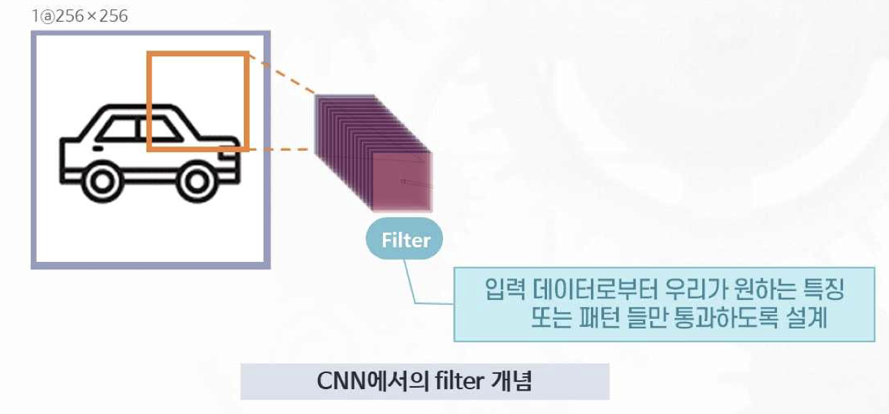
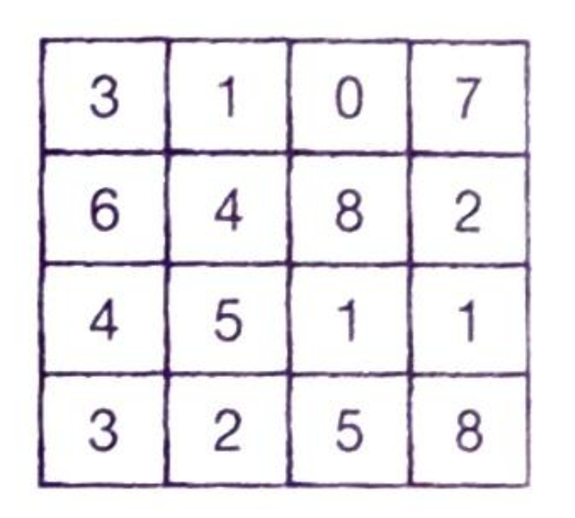
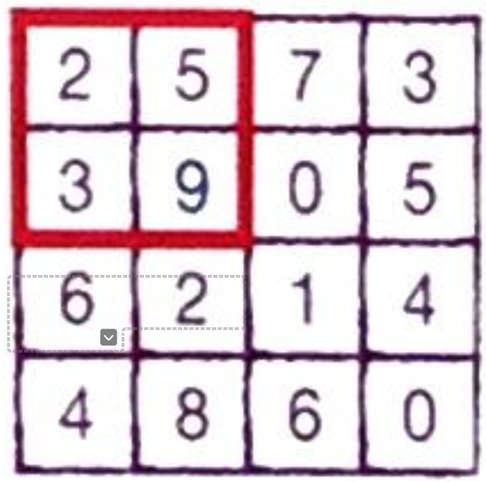
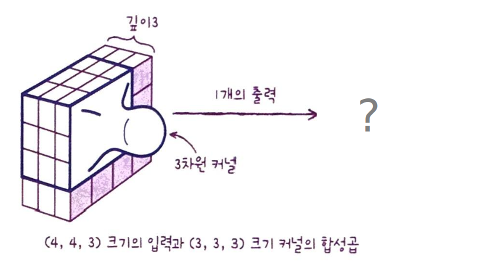
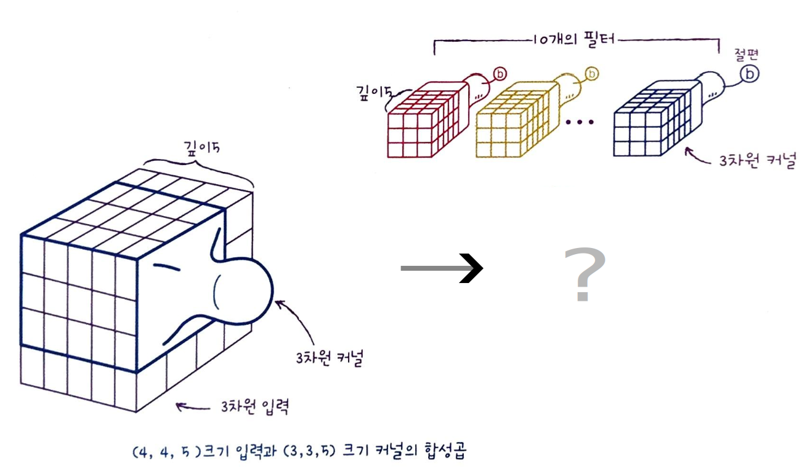

<!DOCTYPE html>
<html lang="en">
  <head>
    <meta charset="utf-8" />
    <meta name="viewport" content="width=device-width, initial-scale=1.0, maximum-scale=1.0, user-scalable=no" />

    <title></title>
    <link rel="stylesheet" href="dist/reveal.css" />
    <link rel="stylesheet" href="dist/theme/white.css" id="theme" />
    <link rel="stylesheet" href="plugin/highlight/zenburn.css" />
	<link rel="stylesheet" href="css/layout.css" />
	<link rel="stylesheet" href="plugin/customcontrols/style.css">


    <link rel="stylesheet" href="css/style.css" />

    <script defer src="dist/fontawesome/all.min.js"></script>

	<script type="text/javascript">
		var forgetPop = true;
		function onPopState(event) {
			if(forgetPop){
				forgetPop = false;
			} else {
				parent.postMessage(event.target.location.href, "app://obsidian.md");
			}
        }
		window.onpopstate = onPopState;
		window.onmessage = event => {
			if(event.data == "reload"){
				window.document.location.reload();
			}
			forgetPop = true;
		}

		function fitElements(){
			const itemsToFit = document.getElementsByClassName('fitText');
			for (const item in itemsToFit) {
				if (Object.hasOwnProperty.call(itemsToFit, item)) {
					var element = itemsToFit[item];
					fitElement(element,1, 1000);
					element.classList.remove('fitText');
				}
			}
		}

		function fitElement(element, start, end){

			let size = (end + start) / 2;
			element.style.fontSize = `${size}px`;

			if(Math.abs(start - end) < 1){
				while(element.scrollHeight > element.offsetHeight){
					size--;
					element.style.fontSize = `${size}px`;
				}
				return;
			}

			if(element.scrollHeight > element.offsetHeight){
				fitElement(element, start, size);
			} else {
				fitElement(element, size, end);
			}		
		}


		document.onreadystatechange = () => {
			fitElements();
			if (document.readyState === 'complete') {
				if (window.location.href.indexOf("?export") != -1){
					parent.postMessage(event.target.location.href, "app://obsidian.md");
				}
				if (window.location.href.indexOf("print-pdf") != -1){
					let stateCheck = setInterval(() => {
						clearInterval(stateCheck);
						window.print();
					}, 250);
				}
			}
	};


        </script>
  </head>
  <body>
    <div class="reveal">
      <div class="slides"><section  data-markdown><script type="text/template"><!-- .slide: class="drop" -->
<div class="" style="position: absolute; left: 0px; top: 0px; height: 700px; width: 1200px; min-height: 700px; display: flex; flex-direction: column; align-items: center; justify-content: center" absolute="true">

<div class="has-dark-background" style="background-color: #555555; position: absolute; left: 0%; top: 5%; height: 3%; width: 100%; display: flex; flex-direction: column; align-items: center; justify-content: center" >

ML Study<!-- .element: style="font-size: 13pt; color: white; padding: 10px; box-sizing: border-box" -->
</div>

<div class="" style="position: absolute; left: 0%; top: 20%; height: 50%; width: 100%; display: flex; flex-direction: column; align-items: center; justify-content: center" >

# 합성곱 신경망의 구성요소
</div>
<div class="" style="position: absolute; left: 0%; top: 70%; height: 5%; width: 100%; display: flex; flex-direction: column; align-items: center; justify-content: center" >

<center>컴퓨터교육과 정솔 <br>
2024.06.03.(화)</center>
</div>
</div></script></section><section  data-markdown><script type="text/template"><!-- .slide: class="drop" -->
<div class="" style="position: absolute; left: 0px; top: 0px; height: 700px; width: 1200px; min-height: 700px; display: flex; flex-direction: column; align-items: center; justify-content: center" absolute="true">

## 합성곱 신경망 (Convolution NN)


### 학습 목표
* 정의 : **필터(Filter)**, 특성맵(Feature map), 패딩(Padding), 스트라이드(Stride)
* 과정 : **합성곱(Convolution) 연산**, 풀링(Pooling) 연산
* 합성곱 신경망의 과정을 이해하고 필요성을 설명할 수 있다.
</div></script></section><section  data-markdown><script type="text/template"><!-- .slide: class="drop" -->
<div class="" style="position: absolute; left: 0px; top: 0px; height: 700px; width: 1200px; min-height: 700px; display: flex; flex-direction: column; align-items: center; justify-content: center" absolute="true">

## 합성곱 신경망의 연산 
### **예제1** 다음과 같은 input과 filter가 주어졌을 때 특성맵을 계산하시오. (단, stride = (1, 1))


### **문제1** 다음과 같은 input과 filter가 주어졌을 때 특성맵을 계산하시오. (단, stride = (2, 2))

</div></script></section><section  data-markdown><script type="text/template"><!-- .slide: class="drop" -->
<div class="" style="position: absolute; left: 0px; top: 0px; height: 700px; width: 1200px; min-height: 700px; display: flex; flex-direction: column; align-items: center; justify-content: center" absolute="true">

## 합성곱 연산과 필터의 역할



</div></script></section><section  data-markdown><script type="text/template"><!-- .slide: class="drop" -->
<div class="" style="position: absolute; left: 0px; top: 0px; height: 700px; width: 1200px; min-height: 700px; display: flex; flex-direction: column; align-items: center; justify-content: center" absolute="true">

## 패딩Padding 
input의 배열 주위를 가상의 원소로 채우는 것 (주로 0)

### 필요성
패딩이 없다면 모서리와 가운데 입력값이 연산에 반영되는 횟수에 차이가 나게 됨

### 패딩의 종류
* Vaild : 패딩 안함 (기본값)
* Same : 입력과 특성맵이 같은 모양의 배열이 되도록 0을 패딩
</div></script></section><section  data-markdown><script type="text/template"><!-- .slide: class="drop" -->
<div class="" style="position: absolute; left: 0px; top: 0px; height: 700px; width: 1200px; min-height: 700px; display: flex; flex-direction: column; align-items: center; justify-content: center" absolute="true">

### **예제2** 다음 input에 (2, 2) filter가 주어졌을 때 Same padding을 하기 위한 방법은?
#### +) Padding 전후 모서리의 원소들이 연산에 참여하는 횟수 비교


</div></script></section><section  data-markdown><script type="text/template"><!-- .slide: class="drop" -->
<div class="" style="position: absolute; left: 0px; top: 0px; height: 700px; width: 1200px; min-height: 700px; display: flex; flex-direction: column; align-items: center; justify-content: center" absolute="true">

## 풀링Pooling
특성맵의 주어진 크기의 구획에서 가장 큰 값을 고르거나 평균값을 계산하여 가로세로 크기를 줄이는 연산
### 종류 : 최대 풀링, 평균 풀링
### 예제3 다음 특성맵에서 (2, 2) 최대 풀링을 적용한 결과는?

</div></script></section><section  data-markdown><script type="text/template"><!-- .slide: class="drop" -->
<div class="" style="position: absolute; left: 0px; top: 0px; height: 700px; width: 1200px; min-height: 700px; display: flex; flex-direction: column; align-items: center; justify-content: center" absolute="true">

<div class="" style="position: absolute; left: 0%; top: 5%; height: 20%; width: 100%; display: flex; flex-direction: column; align-items: center; justify-content: center" >

## 컬러 이미지를 사용한 합성곱 (3차원 input과 3차원 kernel)
### 케라스의 합성곱의 입력 : 3차원배열 (1차원일 경우 변환)
</div>

<div class="" style="position: absolute; left: 4%; top: 30%; height: undefined%; width: 30%; display: flex; flex-direction: column; align-items: center; justify-content: center" >

### 경우1 


</div>

<div class="" style="position: absolute; left: 50%; top: 30%; height: undefined%; width: 30%; display: flex; flex-direction: column; align-items: center; justify-content: center" >

### 경우2


</div>
</div></script></section><section  data-markdown><script type="text/template"><!-- .slide: class="drop" -->
<div class="" style="position: absolute; left: 0px; top: 0px; height: 700px; width: 1200px; min-height: 700px; display: flex; flex-direction: column; align-items: center; justify-content: center" absolute="true">

# 감사합니다
</div></script></section></div>
    </div>

    <script src="dist/reveal.js"></script>

    <script src="plugin/markdown/markdown.js"></script>
    <script src="plugin/highlight/highlight.js"></script>
    <script src="plugin/zoom/zoom.js"></script>
    <script src="plugin/notes/notes.js"></script>
    <script src="plugin/math/math.js"></script>
	<script src="plugin/mermaid/mermaid.js"></script>
	<script src="plugin/chart/chart.min.js"></script>
	<script src="plugin/chart/plugin.js"></script>
	<script src="plugin/customcontrols/plugin.js"></script>

    <script>
      function extend() {
        var target = {};
        for (var i = 0; i < arguments.length; i++) {
          var source = arguments[i];
          for (var key in source) {
            if (source.hasOwnProperty(key)) {
              target[key] = source[key];
            }
          }
        }
        return target;
      }

	  function isLight(color) {
		let hex = color.replace('#', '');

		// convert #fff => #ffffff
		if(hex.length == 3){
			hex = `${hex[0]}${hex[0]}${hex[1]}${hex[1]}${hex[2]}${hex[2]}`;
		}

		const c_r = parseInt(hex.substr(0, 2), 16);
		const c_g = parseInt(hex.substr(2, 2), 16);
		const c_b = parseInt(hex.substr(4, 2), 16);
		const brightness = ((c_r * 299) + (c_g * 587) + (c_b * 114)) / 1000;
		return brightness > 155;
	}

	var bgColor = getComputedStyle(document.documentElement).getPropertyValue('--r-background-color').trim();
	var isLight = isLight(bgColor);

	if(isLight){
		document.body.classList.add('has-light-background');
	} else {
		document.body.classList.add('has-dark-background');
	}

      // default options to init reveal.js
      var defaultOptions = {
        controls: true,
        progress: true,
        history: true,
        center: true,
        transition: 'default', // none/fade/slide/convex/concave/zoom
        plugins: [
          RevealMarkdown,
          RevealHighlight,
          RevealZoom,
          RevealNotes,
          RevealMath.MathJax3,
		  RevealMermaid,
		  RevealChart,
		  RevealCustomControls,
        ],


    	allottedTime: 120 * 1000,

		mathjax3: {
			mathjax: 'plugin/math/mathjax/tex-mml-chtml.js',
		},
		markdown: {
		  gfm: true,
		  mangle: true,
		  pedantic: false,
		  smartLists: false,
		  smartypants: false,
		},

		mermaid: {
			theme: isLight ? 'default' : 'dark',
		},

		customcontrols: {
			controls: [
			]
		},
      };

      // options from URL query string
      var queryOptions = Reveal().getQueryHash() || {};

      var options = extend(defaultOptions, {"width":1200,"height":700,"margin":0.2,"controls":false,"progress":true,"slideNumber":true,"transition":"slide","transitionSpeed":"default"}, queryOptions);
    </script>

    <script>
      Reveal.initialize(options);
    </script>
  </body>

  <!-- created with Advanced Slides -->
</html>
